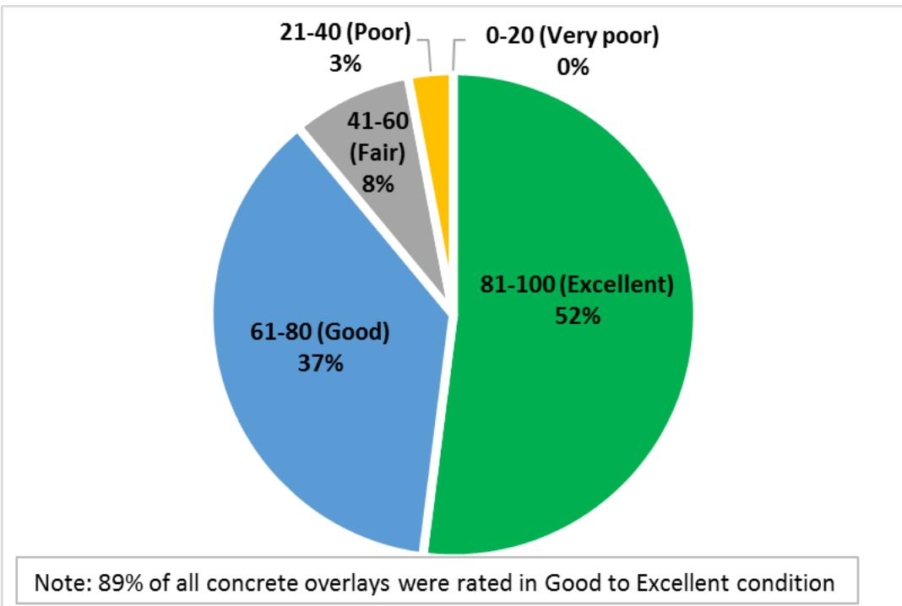
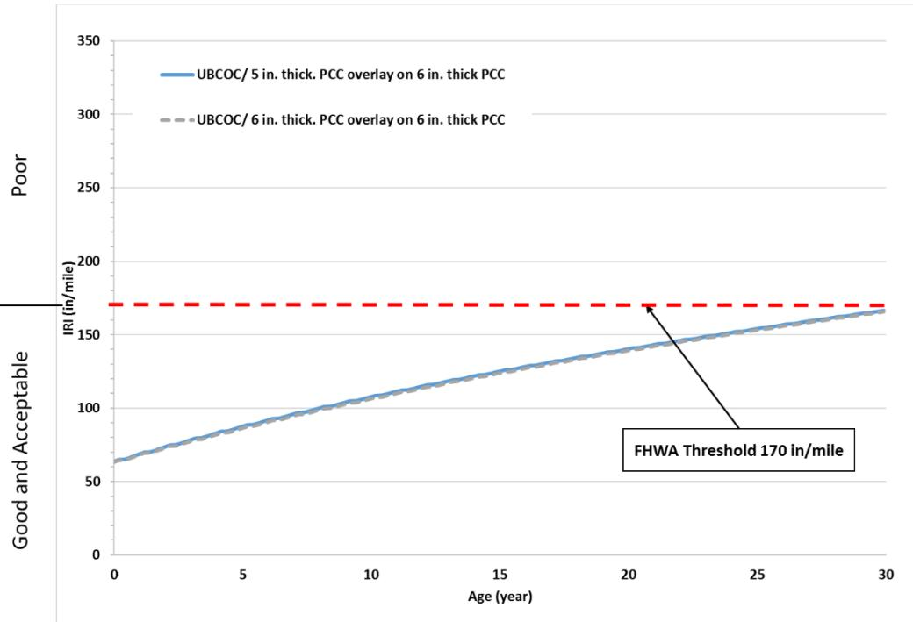
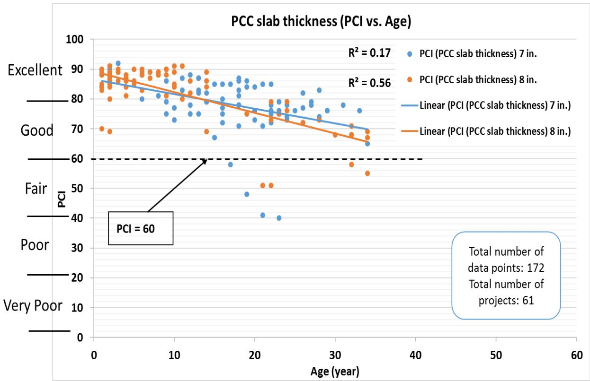
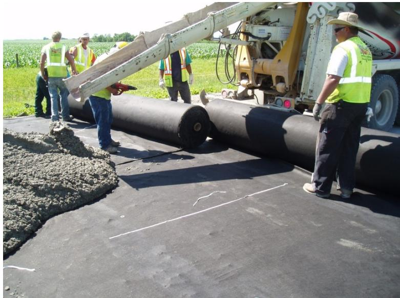
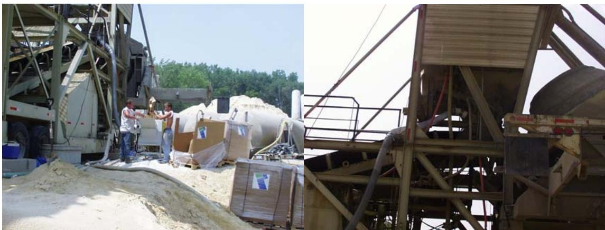
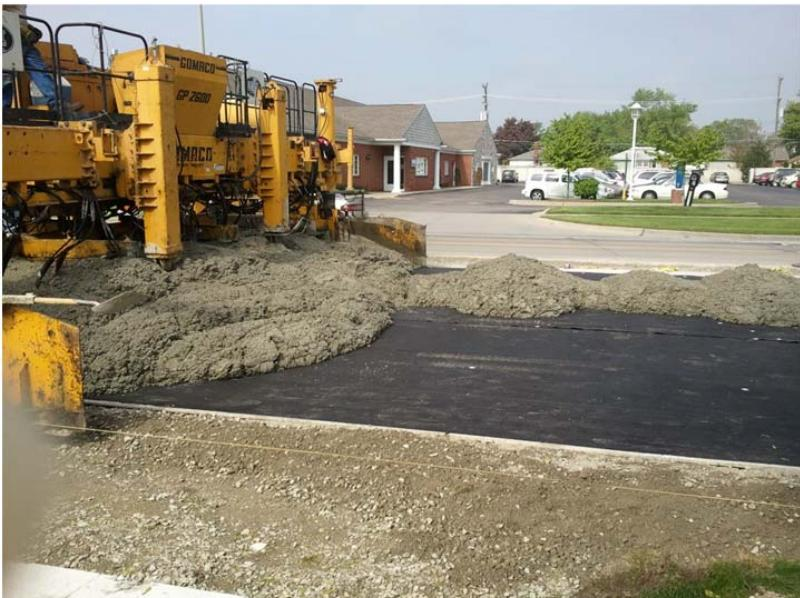
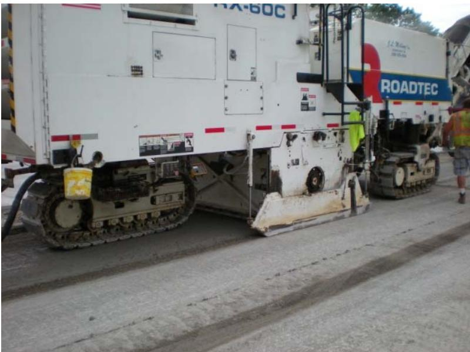

Unbonded Concrete Overlay on Concrete (UBCOC)
Unbonded Concrete Overlay on Concrete (UBCOC) is a specific subtype of concrete overlay that incorporates an intermediate isolation layer, such as asphalt or geosynthetic fabric, between the new portland cement concrete layer and the existing pavement to prevent stress transfer [1]. UBCOC is the second most common type in Iowa’s database, representing 33% of all overlay projects and 34% of total overlay lane-miles, with 125 projects totaling 506 miles.
Sources (8)
Performance Overview
To characterize the composite resilient modulus and deformation characteristics of unbonded overlay sections, cyclic automated plate load testing (APLT) using a 12-inch diameter flat plate applies 250 cycles across five stress levels ranging from 50 to 150 psi [1]. Additionally, MIRA ultrasonic shear-wave tomography is utilized as a nondestructive testing method to measure joint activation in existing thin concrete overlays [2]. Research indicates that unbonded concrete overlays on concrete (COC-U) exhibit significantly lower joint load transfer efficiency compared to bonded or unbonded overlays on asphalt, with average values dropping to approximately 45% versus over 80% for other types [3]. This reduced load transfer is accompanied by higher slab deflections and a smaller contribution from the underlying pavement structure to the overall system stiffness [3]; specifically, unbonded overlays on concrete experience higher maximum deflections under load, typically measuring between 7.63 and 7.92 mils, which is substantially greater than the 3.79 to 5.38 mils observed in conventional asphalt-based overlay systems [3].
 Percentage of joints activated for different joint spacing of 6-inch thick concrete overlays [2]
Percentage of joints activated for different joint spacing of 6-inch thick concrete overlays [2]
Regarding performance metrics, 90% of UBCOC projects rated good to excellent (PCI ≥ 60), which is significantly better than BCOC (72%). At year 20, UBCOC had a PCI of 63, just above the 60-point threshold, and an IRI of 150 in/mi, which was higher than overlay types on asphalt.
Unbonded concrete overlays on concrete (UBCOCs) exhibit superior long-term condition compared to bonded concrete overlays on concrete (BCOCs), with 90% of UBCOCs achieving good-to-excellent status versus 72% for BCOCs [4].

PCI rating of all concrete overlays [4]Design Thickness and Structural Parameters
Design considerations for unbonded overlays must account for existing expansion joints and soil movement areas, as failure to do so can lead to distress at overlay joints and broken slabs [5]. For unbonded overlays on asphaltic concrete bases where no bond is assumed between layers, a design thickness of 4.5 inches is required to maintain structural integrity under predicted traffic loads [6]. While UBCOC thicknesses typically range from 4 to 10 inches, performance evaluations focus on the more common 5- to 8-inch depths due to insufficient data for thinner or thicker sections [4]. Because overlay service life increases with greater thickness, 7-inch overlays maintain a PCI above 60 for approximately 22 years before gradual deterioration begins [4]. Furthermore, analytical investigations using Pavement ME Design indicate that 5-inch to 6-inch thick UBCOCs on existing 6-inch concrete with 12-foot to 20-foot joint spacing can achieve a service life of approximately 30 years before reaching an IRI threshold of 170 in./mi [2].

15-foot joint spacing concrete overlays Pavement ME Design predicted IRI values versus age: UBCOC [2]The structural contribution of the underlying pavement is markedly reduced in unbonded configurations, with backcalculated effective thickness exceeding design thickness by only 1.7 to 2.0 inches compared to 3.9 to 6.0 inches for bonded or unintentionally unbonded overlays on asphalt [3]. To compensate for poor load transfer in unbonded overlays on concrete, design modifications such as incorporating dowel bars or increasing overlay thickness are necessary to achieve performance levels comparable to bonded systems under similar traffic volumes [3].
 Single layer assumption for COA overlays [3]
Single layer assumption for COA overlays [3]
Overlay thickness is a critical determinant of service life, as higher thickness levels directly correlate with increased longevity in PCI values, particularly for unbonded concrete overlays on concrete [4].

UBCOA PCI performance history categorized by concrete overlay thickness [4]Joint Spacing and Pattern Design
In UBCOCs, longitudinal joints are typically spaced at intervals between 4.5 and 20 feet, with 12-foot, 15-foot, and 20-foot spacings being the most frequently utilized configurations [4]. Regarding transverse joints, patterns should be designed as nearly square segments relative to the underlying pavement width while ensuring that existing lane or centerline joints are retained to prevent them from becoming reflective cracks [6]. In unbonded overlays, transverse joints can be sawed into square panels measuring 4.5 x 4.5, 6 x 6, and 9 x 9 feet to control cracking patterns [5]. For thin overlays ranging from 2 to 5 inches in depth, the maximum distance between joints sawed during the ‘skip’ process is limited to five joints to prevent premature transverse cracking [7]. However, when fibers are incorporated into the concrete mix, joint spacing in the overlay may exceed twice the depth in inches, provided the limits specified by the fiber manufacturer are not violated [6].
 Concrete overlay transverse joint spacing based on number of projects [4]
Concrete overlay transverse joint spacing based on number of projects [4]
The optimization of joint spacing relies on the ratio of slab length to radius of relative stiffness (L/ℓ), where target values between 4 and 7 provide the desired balance between timely joint activation and performance [2]. In thin overlays ranging from 4 to 5 inches with shorter joint spacing, joint activation rates often fall in the range of 60–80%, whereas thicker overlays exceeding 6 inches typically achieve activation rates approaching 100% [2]. Performance studies show that among overlays on concrete, UBCOCs with shorter joint spacings (12–15 ft) outperformed 20-ft spacing in IRI [4]. Specifically, UBCOC overlays with 15-foot transverse joint spacing demonstrate superior durability, maintaining a PCI above 60 for up to 28 years compared to shorter or longer spacings [4], and these 15-foot joint spacing configurations maintain smoothness levels below an IRI of 170 in/mi for up to 32 years of service life [4].
 Joint activation vs. L/ℓ and joint spacing for Mitchell County concrete overlay test sections [2]
Joint activation vs. L/ℓ and joint spacing for Mitchell County concrete overlay test sections [2]
For unbonded overlays on concrete, short joint spacing of 12 to 15 feet yields superior International Roughness Index (IRI) values compared to longer spacings of 20 feet or more [4].
 UBCOA IRI performance history categorized by concrete overlay joint spacing [4]
UBCOA IRI performance history categorized by concrete overlay joint spacing [4]
Bond Breakers and Interlayer Materials
Slurry coats have been found insufficient as bond breakers in unbonded concrete overlays, often resulting in significant longitudinal cracking and transverse joint patches within a decade of placement [5]. For unbonded overlays on composite pavements, a 1.5-inch asphalt separation layer is placed after pre-overlay repairs are completed [8]. In contrast, geotextile bond breakers offer a thinner alternative to hot-mix asphalt layers, measuring approximately 0.1 inches compared to the standard 1-inch HMA thickness, which helps preserve vertical clearance in overlay projects while achieving comparable long-term performance [7].
 – Geotextile Separation Layer Used in Missouri [8]
– Geotextile Separation Layer Used in Missouri [8]
These geotextile materials function as positive bond breakers by adhering exclusively to the overlay concrete while preventing mortar penetration to the existing pavement, thereby eliminating bonding between the two concrete layers [7]. Furthermore, geotextile fabric interlayers offer enhanced drainage capabilities compared to asphalt concrete layers due to their relatively high permeability characteristics, providing an additional functional benefit beyond acting as a bond breaker [1].

Unrolling and nailing the material to the existing pavement [7]Reinforcement and Fiber Integration
To increase fatigue capacity and ductility, reduce overlay thickness, and help control differential slab movement caused by curling or warping, structural synthetic fibers are incorporated into thin concrete overlays [2]. Furthermore, bridging or reinforcement over existing working cracks should be incorporated into the overlay design to mitigate distress propagation from the underlying pavement [5]. In unbonded overlays, synthetic fiber reinforcement includes polypropylene fibrillated fibers at 3 pounds per cubic yard, monofilament fibers at 1 pound per cubic yard, and structural fibers at 3 pounds per cubic yard [5].

Fibers Being Blown into the Concrete Mixing Drum [5]Construction Methods and Traffic Management
Unbonded concrete overlays can be effectively constructed with traffic in adjacent lanes or by shifting traffic to one side of the median to allow full-width construction operations [8]. During these projects, geotextile interlayers are installed using a grid pattern of Hiltiramset-type nails spaced approximately 5.25 feet transversely by 5 feet longitudinally, with additional fasteners placed at the pavement edges and centerline to secure the fabric before overlay placement [1]. Additionally, concrete quantities for unbonded overlays typically experience a volume overrun between 10% and 20% due to surface irregularities and wheelpath depths that must be filled during placement [6].

– Placing the 4” Thick Unbonded Concrete Overlay (existing concrete was milled and a geotextile separation layer used) [8]To manage strength development, concrete maturity probes are used to monitor progress, allowing local traffic access at a flexural strength of 350 psi and construction traffic at 500 psi [5]. For unbonded overlays with depths less than 6 inches, construction traffic access is permitted once the concrete reaches a flexural strength of 500 psi, while local traffic may be allowed at lower strengths [7].
Applications and Site Preparation
To extend pavement life, unbonded concrete overlays can be efficiently placed over composite pavements consisting of original portland cement concrete with varying depths of bituminous surface layers [5]. In urban intersection applications where profile grade cannot be raised, existing pavement must be milled to a specified depth to accommodate the overlay thickness [8]. Furthermore, at bridge termini or project ends, milling must extend to a depth of 6 inches or greater to create a vertical edge junction that functions as a thickened end capable of withstanding vehicle impact loads [6].

– Milling Concrete Prior to Placing a 4” Thick Unbonded Concrete Overlay [8]Connections
Related to Concrete Overlay, Bonded Concrete Overlay on Concrete, Unbonded Concrete Overlay on Asphalt, Pavement Condition Index, and Joint Spacing Effects on Performance.
References
- D. J. White and P. Taylor, "Automated Plate Load Testing on Concrete Pavement Overlays with Geotextile and Asphalt Interlayers: Poweshiek County Road V-18," National Concrete Pavement Technology Center, Ames, IA, 2018. [Online]. Available: https://www.intrans.iastate.edu/wp-content/uploads/2018/04/Powashiek_CR_V-18_APL_testing_w_cvr.pdf
- J. Gross, D. King, H. Ceylan, Y. A. Chen, and P. Taylor, "Optimized Joint Spacing for Concrete Overlays with and without Structural Fiber Reinforcement," National Concrete Pavement Technology Center, Ames, IA, Rep. TR-698, 2019. [Online]. Available: https://www.intrans.iastate.edu/wp-content/uploads/2019/06/optimized_joint_spacing_for_overlays_w_cvr.pdf
- D. King, B. Yang, P. Taylor, and H. Ceylan, "Field Performance of Fiber-Reinforced Concrete Overlays," Institute for Transportation, Iowa State University, Ames, IA, Rep. TR-816, 2025. [Online]. Available: https://www.intrans.iastate.edu/wp-content/uploads/2025/05/field_performance_of_frc_overlays_w_cvr.pdf
- J. Gross, D. King, D. Harrington, H. Ceylan, Y. A. Chen, S. Kim, P. Taylor, and O. Kaya, "Concrete Overlay Performance on Iowa's Roadways (Field Data Report)," National Concrete Pavement Technology Center, Ames, IA, Rep. TR-698, 2017. [Online]. Available: https://www.intrans.iastate.edu/wp-content/uploads/2017/09/Iowa_concrete_overlay_performance_w_cvr.pdf
- J. K. Cable, M. L. Anthony, F. S. Fanous, and B. M. Phares, "Evaluation of Composite Pavement Unbonded Overlays: Phases I and II," Center for Portland Cement Concrete Pavement Technology, Iowa State University, Ames, IA, Rep. TR-478, 2003. [Online]. Available: https://www.intrans.iastate.edu/research/completed/evaluation-of-composite-pavement-unbonded-overlays-phase-iii-tr-478-hr-1093-proj-2/
- J. K. Cable, F. S. Fanous, H. Ceylan, D. Wood, D. Frentress, T. Tabbert, S. Y. Oh, and K. Gopalakrishnan, "Design and Construction Procedures for Concrete Overlay and Widening of Existing Pavements," Center for Portland Cement Concrete Pavement Technology, Iowa State University, Ames, IA, Rep. TR-511, 2005. [Online]. Available: https://www.intrans.iastate.edu/wp-content/uploads/2018/03/oreo_design.pdf
- P. D. Wiegand, J. K. Cable, T. Cackler, and D. Harrington, "Improving Concrete Overlay Construction," National Concrete Pavement Technology Center, Ames, IA, Rep. TR-600, 2010. [Online]. Available: http://publications.iowa.gov/20076/1/IADOT_tr_600_Improving_Concrete_Overlay_Construction_2010.pdf
- G. Fick and D. Harrington, "Concrete Overlay Field Application Program, Final Report: Volume I," National Concrete Pavement Technology Center, Ames, IA, 2012. [Online]. Available: https://apps.itd.idaho.gov/apps/manuals/Materials/Materials%20References/OverlayFieldAppFinalReport.pdf
Feedback on this page